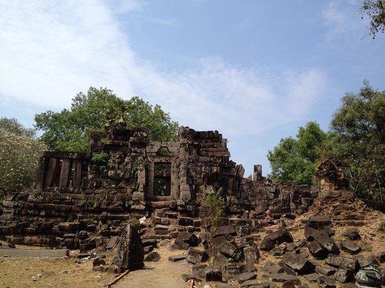

ເຮືອນຫີນ
ຕັ້ງຢູ່ແຄມຝັ່ງແມ່ນ້ຳຂອງຫ່າງຈາກສະຫວັນນະເຂດ ມາທາງທິດໃຕ້ປະມານ 90 ກິໂລແມັດ ຜາສາດເຮືອນຫີນເປັນຊາກຜາສາດຂອມເກົ່າແກ່ອາຍຸກວ່າພັນປີຢູ່ໃນ ເມືອງໄຊພູທອງ ທີ່ຕັ້ງ: ບ້ານເຮືອນຫີນ, ເມືອງໄຊພູທອງ, ໄລຍະຫ່າງຈາກຕົວເມືອງ: ປະມານ 10 ກິໂລແມັດ ການເຂົ້າເຖິງແຫລ່ງ: ສະດວກ ພາກສ່ວນຄຸ້ມຄອງ : ຫ້ອງການ ຖວທ ເມືອງຈັດລະດັບແຫລ່ງທ່ອງທ່ຽວ: ຂັ້ນເມືອງສິ່ງອໍານວຍຄວາມສະດວກ: ເສັ້ນທາງ, ຮ້ານກິນດື່ມ ຂະໜາດນ້ອຍ, ຫ້ອງນໍ້າເຮືອນຫີນ ແມ່ນຮ່ອງຮອຍທາງດ້ານປະຫວັດສາດ ເຊິ່ງສ້າງຂຶ້ນໃນ ອານາຈັກສີໂຄດຕະບູນ ເຊິ່ງເປັນ ອານາຈັກທີ່ໜ້າເກງຂາມ ຂອງອານາຈັກ ໃກ້ຄຽງ.

ໃນປີ ຄສ 557 ນັ້ນ ມີຂຸນອັງຄະຣາດ ແລະ ອົມມະຣາດ ສອງອ້າຍນ້ອງນໍາພາສ້າງ ປະສາດຫີນຂຶ້ນ ເພື່ອເປັນທີ່ເຄົາລົບກາບໄຫວ້ ຂອງສາສະໜາພາມ, ແຮງງານໃນການກໍ່ສ້າງ ແມ່ນໄດ້ເກນເອົາເຜົ່າຊົນຕ່າງໆ ມາຈາກ ອານາຈັກໂຍນົກເງິນຍາງ ມາເປັນຂ້າທາດເຂົາເຈົ້າຫຸບຫອບ ຄອບຄົວມາພ້ອມ ແລ້ວອາໃສຢູ່ ຕາມຖໍ້າຫີນຕ່າງໆ ເພື່ອຊົ້ນແດດຊົ້ນຝົນ, ສ່ວນຂຸນອັງຄະຣາດ ຜູ້ນໍາພາສ້າງ ໄດ້ເຈາະ ອຸໂມງ ຢູ່ກະໂຕພື້ນຜາສາດຫີນ, ກ້ອນຫີນທີ່ນໍາມາສ້າງ ໄດ້ເອົາສິ່ວເຈາະມາ ຈາກຫລາຍບ່ອນ ເຊິ່ງບ່ອນທີ່ໃຫຍ່ທີ່ສຸດ ແມ່ນຢູ່ບ່ອນເບື້ອງ ຕາເວັ້ນຕົກ ຫ່າງຈາກ ປະສາດຫີນ ປະມານ 1 ກິໂລແມັດ, ເອີ້ນວ່າ “ວັງເຮືອ” ຍ້ອນວ່າຮ່ອງຮອຍ ທີ່ສິ່ວເຈາະເອົາຫີນນັ້ນ ໄປສ້າງເຮືອນຫີນ ເຊິ່ງໃນປະຈຸບັນນີ້ ຍັງມີຮ່ອຍຮອງເປັນລັກສະນະ ຮູບຄ້າຍຄືເຮືອ ບາງຈຸດຍັງມີເສດເຫຼືອ ຈາກກ້ອນຫີນ ທີ່ເຈາະອອກມາ ແລະ ຍັງບໍທັນໄດ້ເອົາໄປສ້າງຍັງຍາຍ ເປັນຈໍານວນຫຼາຍ, ເພິ່ນສ້າງຈົນຮອດປີ ຄສ 700 ກໍ່ໜົດ ສະໄໜລາສະວົງ, ຍ້ອນມີພາກສ່ວນອື່ນ 190 ມາຢຶດຄອງແທນ ເປັນອັນວ່າ ຢຸດຕິການກໍ່ສ້າງ ຜາສາດຫີນ ສະນັ້ນ ຜາສາດຫີນ ຈຶ່ງມີຮູບຊົງບໍ່ສໍາເລັດ ຈົນເຖິງປະຈຸບັນນີ້.